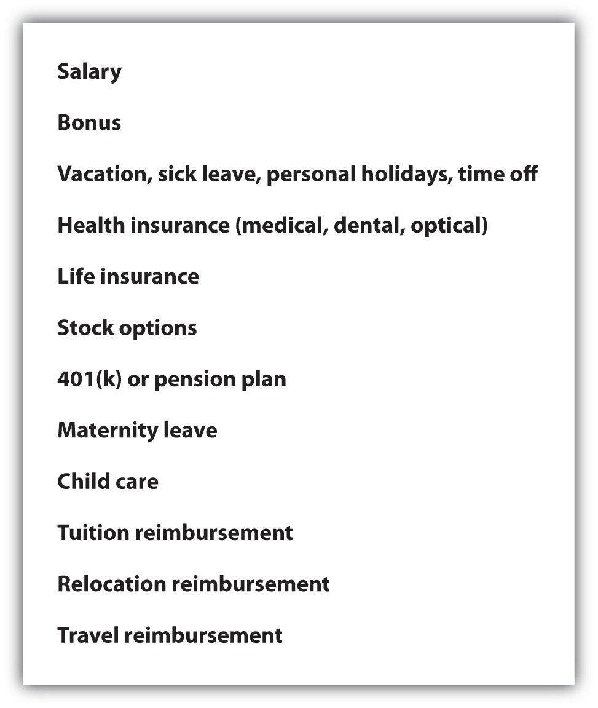
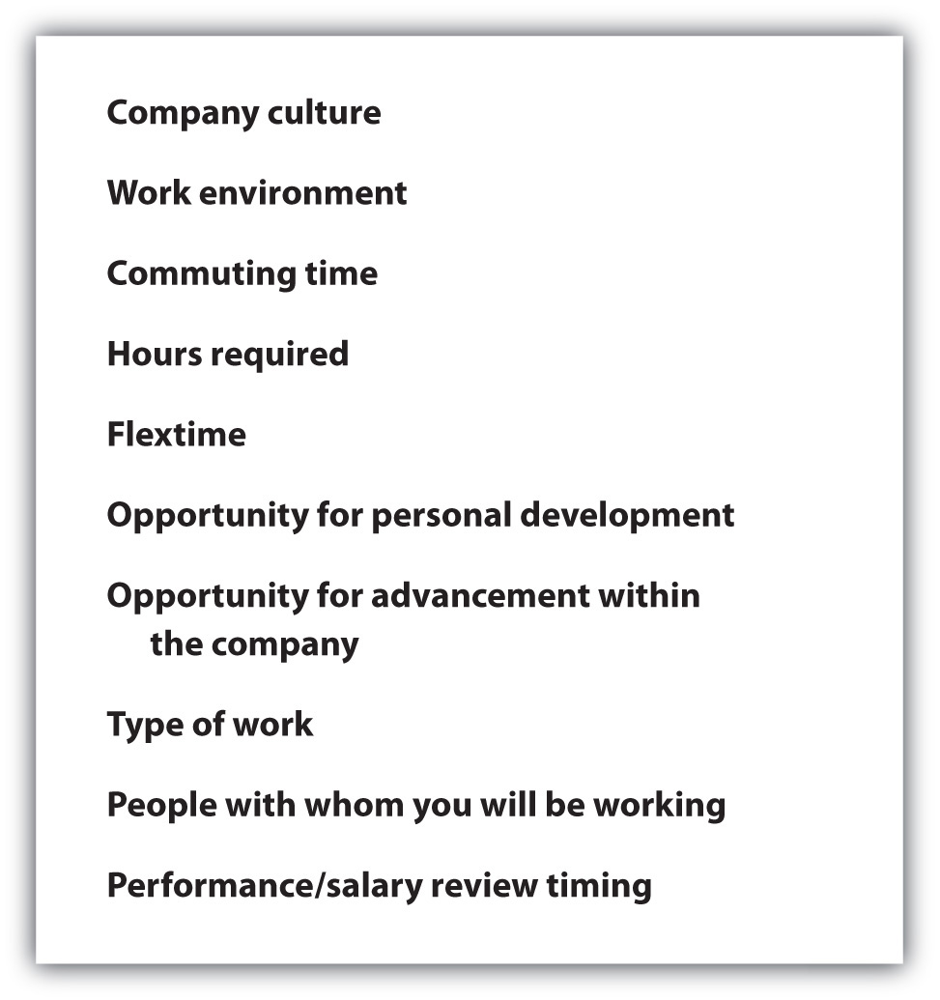
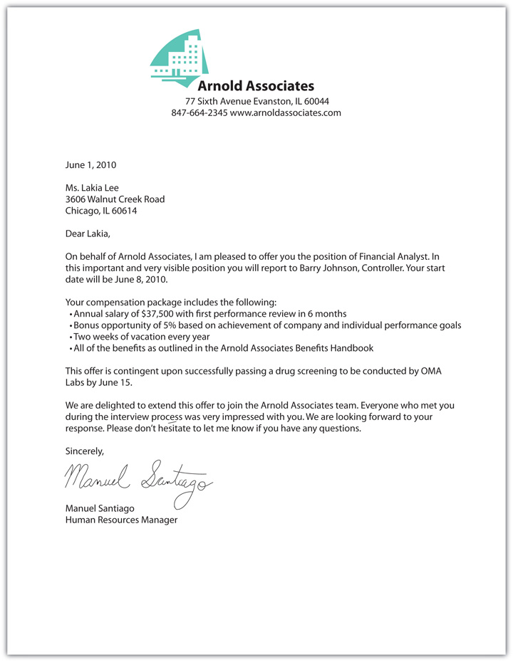
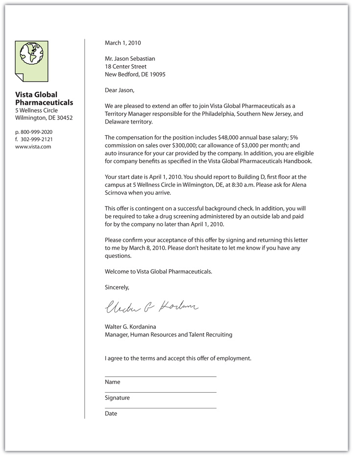

Lisa Peskin shared her tips for successful prospecting in Chapter 7 "Prospecting and Qualifying: The Power to Identify Your Customers". During this ride-along, she is going to give you insights about closing the sale. The term close implies that this step comes at the end of the process. You may be surprised to learn when you start closing the sale.
Ride along with Lisa and learn about how she successfully closes sales.
(click to see video)“Show me the money.”
It’s this line from the classic 1996 movie Jerry Maguire that says it all about negotiating and closing the deal. In the movie, Jerry Maguire (Tom Cruise) is a sports agent who has second thoughts about the way business is conducted, and when he voices his concerns, he loses his job and all his clients except one. Maguire’s passionate plea to his sole client, NFL player Rod Tidwell (Cuba Gooding, Jr.), has become a dramatic metaphor for negotiations and deal making ever since.Jean-Marc Rocher, “Plot Summary for Jerry Maguire,” IMDb, http://www.imdb.com/title/tt0116695/plotsummary (accessed November 19, 2009).
While the movie is fictional, Maguire’s character was based on real-life sports agent Leigh Steinberg, whose firm has negotiated and closed more than one hundred multimillion-dollar deals for high-profile clients in every professional sport. Steinberg’s philosophy on negotiations and closing deals is based on the fact that life is filled with negotiations and deals—from deciding where to eat to buying houses and cars—and each should be handled with “a clear focus and principled philosophy.”Alan M. Webber, “How to Get Them to Show You the Money,” December 18, 2007, Fast Company, http://www.fastcompany.com/magazine/19/showmoney.html (accessed November 19, 2009). There’s nothing better than closing a big deal…the right way.
Whether it’s a major professional sports deal, business deal, or a major purchase, it’s easy to visualize what the “desired state” is in any kind of deal. You can actually see the athlete in your team’s uniform, imagine two companies merging together as one, or see yourself in the car you want to buy. In fact, you negotiate every day. You negotiate with everyone from your roommate about how to arrange the furniture to your siblings about who will use the car. You might even negotiate with your professor about when you can hand in an assignment that is late.
The step in the selling process that moves the conversation to a sale (or the desired resolution) is the closeConsummation of the sale when the prospect agrees to the purchase.. Many people believe that the close takes place at the end of the selling process because that’s when the prospect agrees to buy the product or service. But nothing could be farther from the truth. ClosingBringing the sale to fruition or getting the sale. the sale, or getting the order, starts at the beginning of the selling process, long before you even come in contact with the prospect.
“What it takes to win a championship is to have your preparation meet the opportunities, whether it’s out on the racetrack or behind the scenes,” according to NASCAR driver Kurt Busch.Joe Guertin, “When Did ‘Closing’ Become a Bad Word?” Agency Sales, March 2006, http://www.allbusiness.com/sales/1064380-1.html (accessed March 16, 2010). This is true in sports and in selling. Winning in selling—delivering value to customers and to your company—requires good solid preparation and hard work. Sure, there are some sales that fall into your lap. Those are the ones that make it feel like selling is easy. But most sales don’t happen that way. In fact, in many industries closing the sale may take weeks, months, or even years.
Despite the term “close,” which implies the end, closing the sale starts with the first step in the selling process—qualifying. Sometimes salespeople want to fill their sales funnel (or pipeline) with lots of leads so they don’t take the time or ask the right questions when they are qualifying. While it’s true that you want to “go out and get as many nos as you can,” you’ll get a lot more yeses when you pitch to the right prospects.Joe Guertin, “When Did ‘Closing’ Become a Bad Word?” Agency Sales, March 2006, http://www.allbusiness.com/sales/1064380-1.html (accessed March 16, 2010). In fact, the selling process is analogous to building a house; if the foundation is poured right, everything else will easily come together. The same is true in selling—prospecting is the foundation of the entire process.Tim Connor, “The Myth of Closing Sales,” Roderick Martin, http://roderickmartin.com/the-myth-of-closing-sales (accessed November 17, 2009).
Not only does closing start at the first point in the selling process, but it also is far from the end of the selling process. In fact, closing is a lot like graduation—it is actually the beginning, not the end. Just like graduation is not the end of your education but rather the beginning or commencement of the rest of your life, the closing in sales is the beginning of the relationship with the customer, not the end of the selling process.
The close sounds like it might be a definitive part of the selling process. It’s actually not a single statement, question, or event. Rather, the close is an ongoing series of events that occurs throughout the selling process, according to Mary Delaney, vice president of sales for CareerBuilder.com.“Closing the Deal,” Selling Power Sales Management eNewsletter, May 17, 2004, http://www.sellingpower.com/content/newsletter/issue.php?pc=368 (accessed March 16, 2010). Qualifying is the key; it’s virtually impossible to close a sale with the wrong prospect. But the preparation doesn’t stop there. The preapproach, approach, presentation, and overcoming objections all play a role in the closing the sale. According to author Ray Silverstein, the close is made in the first thirty seconds of the sales presentation. He says that’s when a customer has an emotional response to you and your product or service story. Silverstein points to research that was conducted by William Brooks and Thomas Travisano that concludes that people want to buy from people they like and trust.Ray Silverstein, “How to Close a Sale in the First 30 Seconds,” Entrepreneur, http://www.entrepreneur.com/management/leadership/leadershipcolumnistraysilverstein/article178590.html (accessed November 17, 2009). If this sounds familiar, it should be. The concept of building a relationship based on first impressions was covered in detail in Chapter 3 "The Power of Building Relationships: Putting Adaptive Selling to Work". And understanding the difference between needs, which are rational, and wants, which are emotional, makes a difference in how your prospect perceives you and the message you are delivering.
To demonstrate that the close takes place at virtually every point in the selling process, Daniel Sheridan from Extensis Group LLC, a sales training consultancy, says it best: “If you’re waiting for a proposal to close, it’s too late.” He goes on to say that the most important meeting is the first one because that’s when trust and rapport are established.Simona Covel, “Finding the Right People to Make the Sale,” Wall Street Journal, May 29, 2008, http://online.wsj.com/article/SB121199448885726503.html (accessed November 17, 2009).
The close builds on everything that has already taken place throughout the selling process—rapport, trust, information sharing. It’s also important to know what the close is not. The close is not a high-pressure exchange between seller and buyer. It’s not a time when the salesperson resorts to trickery, manipulation, or other unsavory tactics just to get a sale.Geoffrey James, “Close More Sales: Train Your Sales Team,” Selling Power 23, no. 8, http://www.sellingpower.com/content/article.php?a=6389 (accessed March 16, 2010). While sales are the ultimate financial goal of the selling process, relationships, trust, and understanding a customer’s business and providing cost-effective solutions are driving factors behind making the sale.Ram Charan, “What Your Customer Isn’t Saying about Your Sales Pitch,” Wall Street Journal, May 29, 2008, http://online.wsj.com/article/SB121182439378120865.html (accessed November 17, 2009). The same principles that guide the rest of the selling process also guide the close.
If closing is not a specific event that happens during the selling process, you might be wondering how you effectively get the order. You learned about the trial close in Chapter 10 "The Presentation: The Power of Solving Problems". The trial close can take place during any part of the selling process. The trial close gives you the opportunity to get specific feedback from the customer as it relates to her likelihood to make the purchase at any point during the process. While the trial close is most likely to come during the presentation, it could come even earlier in the process depending on the prospect and the product or service being purchased. A trial close asks for an opinion (“What is most important to you about this product or service?”), whereas a closing question asks for a decision (“Shall we complete the paperwork?”).D. Forbes Ley, “Trial Closing Questions Tell You When to Ask for a Decision,” The Bachman Company, http://www.bachmanco.com/pretz/PDF/Trial%20Closing%20Questions.pdf (accessed November 18, 2009). The trial close gives you the opportunity to learn what the prospect is thinking and will give you some insight as to when to make the close. In some cases, the trial close may result in a close, but if it doesn’t, the prospect’s response provides valuable insight. The trial close should be done early and often throughout the selling process. Getting the prospect’s opinion at various points throughout the process helps you determine your path and how and when you should make your close.D. Forbes Ley, “Trial Closing Questions Tell You When to Ask for a Decision,” The Bachman Company, http://www.bachmanco.com/pretz/PDF/Trial%20Closing%20Questions.pdf (accessed November 18, 2009).
There is an old adage in selling that says, “Always Be Closing” (ABC). This means that a salesperson should never miss the opportunity to close a sale, no matter where it occurs in the selling process.Michelle Nichols, “The Two-by-Four Closing Question,” BusinessWeek, April 19, 2007, http://www.businessweek.com/smallbiz/content/apr2007/sb20070419_586407.htm (accessed November 17, 2009). But in today’s collaborative environment, it’s better to approach closing more like “Always Be Opening” (ABO).Joe Takash, “Connect with the Buyer,” http://www.joetakash.com/media-resource/wp-content/uploads/2009/03/independent-agent.pdf (accessed May 16, 2010). In other words, the best strategy is to always be helping your customer identify and solve his problems, just like you do when you are opening the selling process. Focus on asking the right questions and learning about how you can suggest solutions (in some cases, the solution might not even be your product or service). When you deliver value to your prospect, they will look to you for advice and counsel. “You become much more than a salesperson, you become their marketing expert, a resource, an ally,” according to Mario Russo, general sales manager at radio station WBEN-FM in Philadelphia. “That’s when you are successful in selling.”Mario Russo, Executive Panel in Marketing 2335—Public Relations and Publicity, Saint Joseph’s University, Philadelphia, PA, November 18, 2009.
It’s true that asking for the order is critical for success in selling. But if you close too soon, you might run the risk that the customer thinks that the process is over and mentally moves on to something else.Mark Hunter, “Close Too Quick and You Lose Profit,” Fast Company, November 4, 2009, http://www.fastcompany.com/blog/mark-hunter/sales-hunter/close-too-quick-and-you-lose-profit (accessed November 17, 2009). That’s why it is a good idea to ask exploratory questionsOpen-ended, nonthreatening questions that encourage your prospect to discuss their business needs.: open-ended, nonthreatening questions that encourage your prospect to discuss her business needs. This helps supplement the information you gathered during the preapproach, enabling you to understand what the customer needs and how to meet those needs. For example, if you are selling accounting software, you might ask the following exploratory questions: “What are the top three activities that consume your people’s time daily?” “What is the ideal way you would like your people to spend their time?” “What are the types of activities that you think can be automated?”“Closing the Deal,” Selling Power, May 17, 2004, http://www.sellingpower.com/content/newsletter/issue.php?pc=368 (accessed November 17, 2009). None of these is a hard-sell question. Rather, each question allows you to listen and gather information so that you can identify how you can help the prospect solve his problem.
While you always have your eye on the prize of closing a sale, the focus is to extend your relationship with your prospect beyond selling to servicing and being a business partner. That’s what ABO is all about. When you focus your selling efforts in this way, it makes it easier to sell additional products and services to existing customers because you are constantly learning about ways in which you and your company can add value.
Always Be Opening
(click to see video)This video featuring sales guru, Jeffrey Gitomer, highlights the shift from ABC to ABO.
When you focus on delivering value to your prospects and customers, you have earned the right to close or ask for the sale. It might seem obvious, but sometimes salespeople get caught up in the selling process and lose track of the fact that it is a buying process for the prospect. Sometimes, simple questions like “Will delivery on Tuesday work for you?” or “Should we start your service the week of the twenty-first?” help you and the customer focus on moving from the sales presentation to the delivery of the product or service. The specific closing questions will most likely differ based on the product or service you are selling. For example, in pharmaceutical sales, industry sales expert Jane Williams adds, “Never end a successful close without adding the proper patient dosing.” She says, “It is very important that your physician prescribe your product properly.”“Closing Arguments,” Selling Power Pharmaceuticals eNewsletter, September 11, 2007, http://www.sellingpower.com/content/newsletter/issue.php?pc=648 (accessed March 16, 2010).
Sometimes salespeople don’t feel comfortable asking for the order. Earn the right to ask for the order. Be confident: believe in yourself and your product or service.Laura Lorber, “Three Tips for Closing a Sale,” Wall Street Journal, http://online.wsj.com/article/SB121198785761226199.html#printMode (accessed November 17, 2009). The trust you establish from the beginning will translate into how you can close the sale. Closing the sale is all about presenting solutions for the biggest problems that your prospect faces. “If you can’t help them with their biggest challenge, they won’t have time for you,” says Mary Delaney from CareerBuilder.“Closing the Deal,” Selling Power Sales Management eNewsletter, May 17, 2004, http://www.sellingpower.com/content/newsletter/issue.php?pc=368 (accessed March 16, 2010). Author Barry Farber includes the element of confidence in the closing equation by saying, “The important factor that contributes to your success at closing (or knowing when to move on) is the leverage you have going in and the confidence you have to back it up.”Barry Farber, “Wrap It Up,” Entrepreneur, April 2008, http://www.entrepreneur.com/magazine/entrepreneur/2008/april/191580.html (accessed November 17, 2009).
Not every contact results in a sale. Typically, 80 percent of prospects say no to a sales offer, and that percentage may be as high as 90 percent during these challenging economic times.“Sales Closing—Closing Throughout the Sales Cycle Process Using Different Types of Closes,” Money Instructor, http://www.moneyinstructor.com/art/saleclose.asp (accessed November 17, 2009). This underscores the fact that it usually takes several closes to actually close the sale. In some cases, it will take at least three tries. In other cases, it can take as many as five or more attempts. It’s best to view closing as an ongoing part of the process, not a single event in which a prospect can say no. Confidence and the right mental attitude can make all the difference in being able to take all the nos on the way to yeses.Joe Takash, “Connect with the Buyer,” http://www.joetakash.com/media-resource/wp-content/uploads/2009/03/independent-agent.pdf (accessed May 16, 2010).
It’s rare that a prospect will say, “I’m ready to close this deal.” That step in the process usually belongs to the salesperson to actively close the sale. The best way to know when to close is to listen and watch. There are verbal and nonverbal cues that prospects provide that help you understand when she is ready for you to close. Here are some of the signals that the prospect is ready to buy:
It’s one thing to close a deal with an individual buyer. It’s another thing to close with a buying committee. Here are four steps to close with a committee:
There is not a single surefire way to close every sale. You should be prepared with several different types of closes and use them as appropriate for each situation. Some situations may require a combination of closes.
Direct request closeAsks the prospect for the order. means that you simply ask for the order. This is the most straightforward approach to a close. The fact is customers expect salespeople to ask for the order. This is a simple but effective way to close the sale.Gerald L. Manning, Barry L. Reece, and Michael Ahearne, Selling Today: Creating Customer Value, 11th ed. (Upper Saddle River, NJ: Pearson Prentice Hall, 2010), 310.
| You: | Can I write up the order as we discussed? |
| Prospect: | I think we have covered everything. Yes, let’s wrap it up. |
The benefit summary closeSummarizes the benefits of the product or service as you have discussed them throughout the process. is a natural extension of the selling process. It simply summarizes the benefits of everything you have discussed throughout the process. This approach is especially effective when you are able to integrate and present benefits from the prospect’s point of view that you have discussed over the course of several meetings. This is an opportunity to focus on how you can help her solve the largest problem that she faces.Barton A. Weitz, Setphen B. Castleberry, and John F. Tanner, Jr., Selling: Building Partnerships, 7th ed. (New York: McGraw-Hill, 2008), 319.
| You: | We’ve talked about the fact that speed is extremely important to you and your company. We can deliver your complete order to your twenty-seven construction sites within forty-eight hours of your commitment. In addition, you’ll never be at risk for product performance because we guarantee the product 100 percent. If you ever have a problem, you just call us, and we’ll replace it, no questions asked. Will you be willing to commit to an initial order of fifty? |
| Prospect: | Yes, we are looking for a partner who will not only provide the highest quality product but also be able to deliver it on time to all our locations. It sounds like you have your bases covered. If you can deliver what you say, we have a deal. |
The assumptive closeIncludes a question that when the prospect replies, he is committing to the sale. asks a question that when the prospect replies, she is committing to the sale.Geoffrey James, “Sales Reps’ Frequently Asked Questions on Closing,” Selling Power, http://www.sellingpower.com/content/article.php?a=6389 (accessed November 17, 2009). In other words, you are assuming that the customer is going to make the purchase. This close can be effective if you have done your job of developing trust and rapport with your prospect.
| You: | Shall we set you up on automatic billing? |
| Prospect: | Automatic billing definitely works best for us. |
The alternative-choice closeGives the prospect a choice between two options rather than a choice between buying and not buying. gives the prospect a choice between two options rather than a choice between buying and not buying.“Alternative Close,” ChangingMinds.org, http://changingminds.org/disciplines/sales/closing/alternative_close.htm (accessed November 18, 2009). This close is related to the assumptive close but gives your prospect the option of which product or service they will buy.Charles M. Futrell, Fundamentals of Selling: Customers for Life through Service, 10th ed. (New York: McGraw-Hill Irwin, 2008), 417.
| You: | Would you prefer the white or blue? |
| Prospect: | White is a more neutral color. |
Types of Closes
(click to see video)Hear Lisa Peskin, sales trainer at Business Development University, discuss the assumptive close and the alternative-choice close.
The compliment (or vanity) closeRelates the purchase to the person and appeal to his or her sense of identity by paying a compliment. helps you relate the purchase to the person and appeal to his or her sense of identity. You are making a positive connection between the purchase decision and the judgment of the buyer. When you use this approach to closing, you are confirming their role as a subject matter expert. You are, in fact, paying them a compliment.
| You: | One of the reasons I like calling on you is because you and your team really understand your business and your customer. You make it easy for your customer to buy from you and you offer them the product at a fair price. No games, no coupons just good, honest value. I think that our product can expand your offering to your customers with a company that shares your values about putting the customer first. I suggest you start by adding this item to your line and let’s gauge the customer response. |
| Prospect: | I’m glad to hear that you feel that way. We do take our commitment to our customers very seriously and we only like to do business with people who feel the same way. I think it would be a good idea to start out with this one product and get some customer feedback. If they like it, we can talk about expanding to more products. |
It’s best to have several types of closes ready to deliver. In some cases, it’s a combination of closesUsing more than one of the closing approaches together to gain agreement on the sale. that helps you ultimately gain agreement with the prospect. Virtually any of the different closes can be used together.
| You: | The horsepower on this model is the highest in the industry. And the model is so efficient that it will lower your cost per unit in all your factories starting on day one. Can we wrap this up? |
| Prospect: | It looks like this is going to be a good short-term and long-term investment for us. Yes, let’s get the paperwork ready. |
Whatever close you use, it’s best to keep it focused and brief. Salespeople have a habit of talking too much, especially when they’re ready to close. According to Michelle Nichols, contributor for BusinessWeek, author, and sales trainer, “Ask yourself what aspect of your offering would customers want so badly that they would miss lunch or cross a very busy street to get it?”Michelle Nichols, “The Two-by-Four Closing Question,” BusinessWeek, April 19, 2007, http://www.businessweek.com/smallbiz/content/apr2007/sb20070419_586407.htm (accessed November 17, 2009). That should be the focus of your close.
Closing is part of the selling process. A process is a systematic approach, which, by its very nature, can be measured. You won’t be able to be successful closing every sale. After all, even professional baseball players only hit the ball three times out of every ten pitches to be considered above average. While hitting the ball 100 percent of the time would be considered unrealistic, every professional hitter takes batting practice to help increase his batting average. His batting coach gives him tips as to how to stand, swing, and ultimately increase his percentage of hitting the ball. The same can be done in closing. Record the information about your closings—what works and what doesn’t.Raymund Flandez, “Sales Outsourcing First Teaches Workers to Ask A Lot of Questions,” Wall Street Journal, September 12, 2008, http://online.wsj.com/article/SB121199452139126417.html (accessed November 17, 2009).
You don’t have to wait until the close to be able to track your progress. Sales veteran and author Barry Farber suggests managing accounts and the sales process with a simple visual tool. Post your prospects in the different stages of the sales cycle on a corkboard. While there are several software programs that perform this function, there’s nothing more powerful than seeing it play out on the wall in front of you every day.Barry Farber, “Wrap It Up,” Entrepreneur, April 2008, http://www.entrepreneur.com/magazine/entrepreneur/2008/april/191580.html (accessed November 17, 2009).
A complex saleSale of a high-value product or service (usually over $100,000) that may take years to close. is a term that usually refers to high-value purchases (usually $100,000 and higher). Products and services such as enterprise systems, health care providers, commercial real estate, manufacturing equipment, logistics services, and other major business-to-business (B2B) purchases are considered complex sales. These types of sales have a long selling cycle because there is a lot at stake for such a major purchase and there are multiple people involved in the decision-making process. In fact, it may take as long as six months to three years to close the sale.Steve Kayser, “Shooting the Donkey in the Complex Sales Process…Hollywood Style,” http://scottymiller.wordpress.com/category/tips-on-navigating-the-complex-sale (accessed January 7, 2010). The product or service commitment is usually a long-term commitment with a contract as long as three, five, or even ten years or longer.
While the selling skills discussed throughout this book apply to complex sales, there are some differences. According to Jeff Thull, author of Mastering the Complex Sale, there are four phases to a complex sale.
During each of these phases, it’s important to identify all the decision makers and their positions in the process. As with every stage in the selling process, this is about asking the right questions. “How will your organization go about making this decision?” and “Who else do I need to talk to?” are good questions to ask during the discover phase so that you can get input and feedback from all involved at the beginning of the process. Once you identify all the people involved in the decision-making process, you’ll want to identify the decision makers. Again, the right questions will help you focus your efforts appropriately. Knowing to whom the expense will be charged helps you identify the ultimate authority. The person who controls the budget is most likely different from the person who will be evaluating the technical aspects of the product or service. For example, while the chief information officer may make the budget decision, the systems implementation manager may be evaluating the technical aspects of the software. Finally, you want to identify the “power broker,” the person who will ultimately make the final decision. This is usually the person, a subject-matter expert, who is the right hand of the person who controls the budget.“Ten Keys to Winning Complex High Dollar Sales,” Best-Coaching-Training.org, May 9, 2009, http://www.best-coaching-training.org/2009/05/29/ten-keys-to-winning-complex-high-dollar-sales (accessed January 7, 2010). In other words, you want to identify with whom you will be negotiating and ultimately closing the sale.
Name the type of close that is used in each of the following examples:
Create a closing for each of the following situations and identify the type of close you are using:
Now that you have learned about the role of closing in the selling process and techniques to close the sale, it’s time to dig a bit deeper into the process of negotiating. Depending on the product, service, or prospect, some sales might be straightforward like, for example, buying a computer (“I’ll take the MacBook Pro with the fifteen-inch screen”). The price is posted and there is no room for negotiation. However in many situations, especially in business-to-business (B2B) selling, the pricing, length of contract, terms, options, delivery dates, services, and other aspects of the sale can all be negotiated. Negotiation, like selling, is a process. Following the process helps improve your chances of getting what you want.
Simply put, “negotiatingThe act of discussing an issue between two or more parties with competing interests with the aim of coming to an agreement. is the act of discussing an issue between two or more parties with competing interests with the aim of coming to an agreement.”“Negotiation,” Entrepreneur, http://www.entrepreneur.com/encyclopedia/term/82556.html (accessed November 20, 2009). While that might sound like an impossible task, it is not as difficult as you might think. Even people with differing positions or points of view share a common interest, which becomes the basis for finding common ground. It’s these common interests—security, economic health, personal recognition, control—that motivate people. If you take the time to understand your prospect’s interests in a negotiation, you can successfully collaborate and find a solution that supports the interests of all parties.Stephanie Mojica, “The Art of Sale Negotiation Skills,” Associated Content, December 26, 2008, http://www.associatedcontent.com/article/1313361/the_art_of_sale_negotiation_skills.html?cat=35 (accessed November 19, 2009).
It is negotiating that provides profit for organizations. The collaboration between parties is what provides companies the opportunity to exchange goods and services for money.
Sales Negotiations
This series provides insights about how to negotiate in B2B selling.
Why negotiate:
http://www.sellingpower.com/content/video/?date=9/7/2007
How to negotiate using value:
http://www.sellingpower.com/content/video/?date=9/10/2007
What makes a good negotiation:
It might be helpful to think about a negotiation like an iceberg. Although you can see the tip of the iceberg, it can be deceiving because it does not tell the entire story. The same is true when you are negotiating; your prospect may say something that appears to be obvious but really wants to achieve other things that are hidden below the surface. Using the process of negotiation to learn more about your prospect’s motivations and interests, you can understand what is below the tip of the iceberg. It’s usually the part of the iceberg that you can’t see that is more substantial and has more impact that the portion that is visible. When you come prepared, listen, and probe during the negotiation process, you can learn a lot about what lies below the tip of the iceberg and use this information to collaborate and eventually reach a common ground on the issues. For example, assume you are selling advertising space for a men’s magazine to the hottest new beer company. Your contact at the beer company wants to get the word out about this new brand but has a very small budget, so he doesn’t want to pay the full published rate for the ads. You don’t want to sell at less than the published rate because that will lower the value of your ad space. The tip of the iceberg shows that this is a price negotiation. However, if you ask the right questions and listen more, you will learn that his ultimate objective is to get people to taste the beer because that is the best way to get new customers. If he can get a major sampling opportunity, then he can use it to go to other media partners to get other sampling campaigns. Now you have gotten below the surface of the iceberg and understand his motivations. With this additional information that wasn’t readily visible on the surface, you can offer him an advertising package that includes ads in the magazine in addition to sampling opportunities at three upcoming national events that the magazine sponsors. Now the negotiation is focused on all parties winning by getting something they want, rather than simply negotiating on price. Getting below the surface provides valuable information and insights for negotiating.
Understand that negotiation takes place only before you agree to anything: “If you ask for something before a contract is signed, it’s called ‘negotiating.’ If you ask for something after a contract is signed, it’s called ‘begging.’ It’s better to be a good negotiator than an expert beggar.”RCM Staff Report, “27 Principles of Negotiating with a Meeting Facility,” MeetingsNet, February 1, 2003, http://meetingsnet.com/ar/meetings_principles_negotiating (accessed November 19, 2009).
A successful negotiation can be measured by its ability to deliver a mutually beneficial solution to all parties. Some people believe that negotiation is an act that yields a “win” for one side and therefore a “lose” for the other side. The win-lose approach usually ends up in a lose-lose deal that doesn’t work for anyone.Robert J. McGarvey, “Covering the Bases,” Entrepreneur, June 1997, http://www.entrepreneur.com/magazine/entrepreneur/1997/june/14260.html (accessed November 20, 2009). This philosophy of negotiating is selfish and short term. In addition, this approach implies that negotiation includes some kind of confrontation or manipulation to “trick” one side into doing something that it doesn’t want to do. This is an unethical approach to negotiating which doesn’t have a place in the business world.Daniel Roach, “5 Simple Rules for Unbeatable Sales Negotiation,” Associated Content, September 29, 2008, http://www.associatedcontent.com/article/1047808/5_simple_rules_for_unbeatable_sales.html?cat=3 (accessed November 19, 2009).
In selling, negotiating and closing go hand-in-hand. Just as closing is not a one-time event, negotiating is a process that has both short-term and long-term impacts.“Negotiating to Win-Win,” Selling Power Sales Management eNewsletter, January 6, 2003, http://www.sellingpower.com/content/newsletter/issue.php?pc=248 (accessed March 16, 2010). The best negotiations are collaborative in nature and focus on delivering mutual satisfaction. According to Leigh Steinberg, lawyer and sports agent, “The goal is not to destroy the other side. The goal is to find the most profitable way to complete a deal that works for both sides.”Alan M. Webber, “How to Get Them to Show You the Money,” Fast Company, October 31, 1998, http://www.fastcompany.com/magazine/19/showmoney.html (accessed November 19, 2009). Effective negotiating is based on respect and is seeded with open communication. Collaborative negotiating is dependent on the following three elements:Herb Cohen, You Can Negotiate Anything (New York: McGraw-Hill, 1980), 163.
1. Building trust.Herb Cohen, You Can Negotiate Anything (New York: McGraw-Hill, 1980), 163. You’ve already learned in Chapter 3 "The Power of Building Relationships: Putting Adaptive Selling to Work" that establishing and building trust is key to relationship building. Negotiating is the ultimate extension of a relationship because you and your customer are agreeing to concede on some points to make the relationship go even farther. If your prospect signs a contract with your company for products or services, you are now even more dependent on each other to make the relationship work. It is the true win-win-win relationship. But if your prospect doesn’t trust you, or you don’t trust her, it will be difficult to enter into a negotiation that will work for both of you and both of your companies. Building trust is the precursor to all business transactions, especially negotiating and closing.
The best way to build trust during the negotiation process is to gain trust before the formal negotiation. And then, during the formal negotiation, focus on the ends rather than the means.Herb Cohen, You Can Negotiate Anything (New York: McGraw-Hill, 1980), 163. In other words, instead of focusing on going head to head on each issue to be negotiated, concentrate on keeping the end goal in mind. Take the time to listen and understand exactly what is motivating your prospect so you can deliver what is important to her. “Negotiation is needs based,” according to the online Selling Power Sales Management Newsletter. Understanding what is important to you and to your prospect drives your negotiation.“Negotiating to Win-Win,” Selling Power Sales Management eNewsletter, January 6, 2003, http://www.sellingpower.com/content/newsletter/issue.php?pc=248 (accessed March 16, 2010).
Honesty: The Best Negotiating Tool
Marty Rodriguez, one of the top real estate brokers worldwide for Century 21, has a simple formula for successful negotiations. She feels strongly that the real estate business isn’t just about closing the deal—it’s about providing honest information to help customers make the decision that’s right for them. She tells prospects everything from the fact that there is structural damage on a property to whether she thinks a deal is out of their price range. “When you treat people that way they’re not only happy to give you a commission—they become raving fans,” according to Rodriguez.Polly LaBarre, “Saleswoman for the 21st Century,” Fast Company, December 18, 2007, http://www.fastcompany.com/node/36271/print (accessed November 18, 2009).
2. Gaining commitment.Herb Cohen, You Can Negotiate Anything (New York: McGraw-Hill, 1980), 163. Part of the process of closing is gaining commitment on every specific element of the sale. To do that effectively, strive to gain commitment long before you begin the formal negotiation. That means using every touch point you have at the company to help you. While you might think it is impossible to enlist others in your prospect’s company to help you sell, consider the creativity of Art Fry, the creator of 3M Post-it notes. Fry stumbled upon the semisticky adhesive years before the product was introduced after creating the first version of the product as a way to mark hymns in his hymnal at church, he started giving his new invention to secretaries and coworkers at 3M. Soon secretaries were taking the pilgrimage between buildings on the 3M corporate campus just to get more of the sticky note pads. It was the demand from the people who used the product that ultimately generated interest in marketing the product to consumers. Fry successfully gained commitment from others in the company as a way to “sell” his new invention as a marketable product.Greg Beato, “Twenty-Five Years of Post-it Notes,” March 24, 2005, http://archives.secretsofthecity.com/magazine/reporting/features/twenty-five-years-post-it-notes-0 (accessed November 20, 2009).
3. Managing opposition.Herb Cohen, You Can Negotiate Anything (New York: McGraw-Hill, 1980), 183. It’s true that although a negotiation is a collaborative effort, it is inherently a situation that addresses opposing views. The best way to manage this is to be prepared and know what’s important to you and your prospect.
Searching for Common Ground
Microsoft wanted to be more dominant in the Internet search business and saw the acquisition of Yahoo! and the development of a new search engine named Bing as the way to gain market share quickly. Although Microsoft made a bid to buy Yahoo! in early 2008, it wasn’t until July 2009 that a deal was closed. The original $45 billion takeover bid was shunned by Yahoo! much to the dismay and dissatisfaction of the shareholders because senior management wanted the company to remain a separate company.Peter Burrows and Robert D. Hof, “Yahoo Gives in to Microsoft, Gives Up on Search,” BusinessWeek, July 29, 2009, http://www.businessweek.com/technology/content/jul2009/tc20090728_826397.htm (accessed January 7, 2010). Then, newly appointed Yahoo! CEO Carol Bartz saw an opportunity for common ground and negotiated a deal that was a win for everyone. Under the ten-year agreement, Microsoft’s Bing will be used to power Yahoo! searches. Yahoo! will receive 88 percent of the revenue from all searches done on Yahoo! Web sites. Customers and advertisers now have a viable alternative to Google. Negotiating a solution that lets everyone win, including the customer, takes creativity and time.David Goldman, “Microsoft and Yahoo: Search Partners,” CNNMoney.com, July 29, 2009, http://money.cnn.com/2009/07/29/technology/microsoft_yahoo/index.htm (accessed January 7, 2010).
Every negotiation, whether it is in business, politics, or your personal life, includes three critical elements. Understanding the role of these elements can help make you a better negotiator.
Many salespeople are afraid of negotiating. They are worried that they won’t be up to the challenge to persuade someone to do what they want or to pay their price. Confidence and preparation go a long way to achieving a satisfactory result on both sides. Negotiating and closing are ways of gaining agreement. The old saying goes, “Everything is negotiable,” and it’s true. Your prospect believes the same thing so be prepared to negotiate about virtually every aspect of the sale. For less complex sales, the close might come as a result of a simple question at the end of the presentation. However, for more complex sales, there are various elements of the sale that must be agreed upon to close the sale. Elements such as price, length of contract, service, terms, and options are common points to be negotiated as part of the close.
Negotiations in B2B selling usually require multiple parties to be involved from both companies. You may find yourself negotiating one-on-one with a prospect or being a member of a negotiating team that works with a prospect team to negotiate a deal. Either way, the same principles of negotiating apply.
Many salespeople are concerned about negotiating price. They think that lowering the price will make the sale. In fact, price is rarely the motivating factor behind any purchase. That’s not to say that price isn’t important, but customers buy value, not price. If price were always the determining factor in purchases, premium brand such as Porsche, Apple, and Neiman Marcus would not exist. If you’ve ever shopped at Nordstrom, Banana Republic, or Abercrombie & Fitch, you decided that those retailers offered more value than Old Navy, eBay, or Wal-Mart for the item you bought. Price is a part of the value equation but not all of it. According to author Kelley Robertson, “Everything you say and do from the first contact with a prospect affects the value of your product or service in their mind.”Kelley Robertson, “Let’s Make a Deal: Negotiating Techniques,” The EyesOnSales Blog, January 18, 2008, http://www.eyesonsales.com/content/article/lets_make_a_deal_negotiating_techniques (accessed November 19, 2009). That means establishing value with your presentation, demonstration, testimonials, follow-up, and everything that comes before the actual negotiation. How is your product or service different? What advantage does it offer? What is the most important problem it will solve for your prospect?Kelley Robertson, “Let’s Make a Deal: Negotiating Techniques,” The EyesOnSales Blog, January 18, 2008, http://www.eyesonsales.com/content/article/lets_make_a_deal_negotiating_techniques (accessed November 19, 2009).
Forty percent of customers ask for a price concession not because they want it to close the sale but because “they had to ask.”
Fifty percent of salespeople give price concessions on the first request.
The best salespeople negotiate on value, not price, and use creative negotiating to find common ground.Colleen Francis, “Negotiation Quick Hits,” The EyesOnSales Blog, November 13, 2008, http://www.eyesonsales.com/content/article/negotiation_quick_hits (accessed November 19, 2009).
If your prospect wants to negotiate on price, use your creative problem solving skills to get to the end that will work for all parties. Use concessionsA point on which you are willing to compromise., something that you are willing to compromise, to create value during the negotiation. For example, use length of the contract, payment terms, service, delivery date, training, or other elements to demonstrate to your prospect that you are willing to work with him and give him something that has value to him.
| You: | I’m not able to meet that price, but I can offer you three months of training worth $3,000 at no charge. |
| Prospect: | How many employees would be included in the training? |
The following is another example:
| You: | That pricing is only available if you carry the entire product line. If you add all ten of the products into all your stores, I can meet that pricing. |
| Prospect: | We can take a look at that. |
The bottom line is that it’s best not to make a concession without getting a concession. In these examples, the salesperson always used another part of the deal to give something and get something in return. This win-win-win approach helps reach common ground and close the sale faster.RCM Staff Report, “27 Principles of Negotiating with a Meeting Facility,” MeetingsNet, February 1, 2003, http://meetingsnet.com/ar/meetings_principles_negotiating (accessed November 19, 2009).
While negotiation has some elements of being an art, there are three specific steps that can be followed to help ensure success with each negotiation.
Steps |
Activities |
|---|---|
| 1. Prenegotiation |
|
| 2. Negotiation |
|
| 3. Postnegotiation |
|
Start off in the right frame of mind. Be confident by knowing that you are one of the finalists for your prospect’s business. If you are confident that you have the best product and represent the best value for the price, you already have the beginning of a good negotiation. On the other hand, if you’re not confident or don’t believe in the value of your product, chances are you will not negotiate well.Colleen Francis, “Negotiation Quick Hits,” The EyesOnSales Blog, November 13, 2008, http://www.eyesonsales.com/content/article/negotiation_quick_hits (accessed November 19, 2009).
Once you believe you are presenting the best option with the best value to your prospect, dig below the surface in research and conversation to learn what’s really important to your prospect. Ask a lot of questions; negotiators report that they often have to ask five levels of “why” to get to the “root cause” or true motivator of the person with whom they are negotiating.John Hoult, “Negotiation 101,” Fast Company, September 30, 2000, http://www.fastcompany.com/articles/2000/10/act_podziba.html?page=0%2C0 (accessed November 17, 2009).
Identify your prenegotiation goalObjectives that are identified before a negotiation begins and which identify the minimum you are willing to accept to make the deal happen., the minimum that you will accept during the negotiation. This is critical to your success as a negotiator so that you don’t give away more than you want in order to make the deal. Prenegotiation goals should be realistic based on what you want to get out of the negotiation and what your prospect wants or needs to get out of the negotiation. This is where you have the opportunity to explore creative solutions that may address different aspects of the sale. (Are you willing to provide additional services rather than provide a price concession? Will shorter payment terms help your prospect be able to sign on the dotted line?)
It’s a good idea to realize that your prenegotiation goals should not be the same offer you put on the table. Always allow some negotiating room as the first offer is rarely, if ever, accepted. Your prospect wants to feel as if she was able to get you to move from your original position. When you identify your prenegotiation goals, you know where you may end up, and also give yourself some room to negotiate.John Hoult, “Negotiation 101,” Fast Company, September 30, 2000, http://www.fastcompany.com/articles/2000/10/act_podziba.html?page=0%2C0 (accessed November 17, 2009).
This is where it all comes together—your preparation, prenegotiation goals, strategy, and understanding of your prospect’s needs. Although you have done your homework and set your prenegotiation goals, hold firm on your initial offer. This allows you to learn more about what your prospect thinks is important and why. If you give in too early in the process, your prospect will feel like the negotiation was too easy and may have an expectation of getting even more concessions than you are willing to give. The general rule of negotiating is not to accept the first offer. That means you will need to reiterate the value you deliver and hold firm to your initial offer.Anthony Tjan, “Four Rules of Effective Negotiations,” Harvard Business Review, July 28, 2009, http://blogs.harvardbusiness.org/tjan/2009/07/four-rules-for-effective-negot.html (accessed November 17, 2009).
As the negotiation progresses, consider offering a concession to move toward common ground. But for every concession you give, get one in return. For example, “I’ll be able to look at pricing like this if we were able to be your exclusive distributor in the Northeast.” This is an example of using other “currencies” to make the negotiation work. In this case, the currency of exclusivity is used in exchange for a price concession.Anthony Tjan, “Four Rules of Effective Negotiations,” Harvard Business Review, July 28, 2009, http://blogs.harvardbusiness.org/tjan/2009/07/four-rules-for-effective-negot.html (accessed November 17, 2009).
Specificity is key in negotiating and closing, because once an issue is negotiated, it will be difficult to revisit it. Define each negotiated point in specific terms such as the number of days until delivery, specific payment terms, options that are clearly spelled out, and any other information that will clearly define your agreement. In most cases, all these elements are included in the contract that is signed as a result of the negotiation. It’s always best to clarify each point during the negotiation and put it on paper to avoid misconceptions, bad memories, or surprises down the road. If there is no contract, it’s a good idea to follow up the negotiation with a written summary of the agreed upon points.“Customers’ Negotiating Tactics,” Selling Power Sales Management eNewsletter, July 1, 2002, http://www.sellingpower.com/content/newsletter/issue.php?pc=212 (accessed March 16, 2010).
If you encounter an issue during the negotiation that causes a deadlockA point in the negotiation at which discussions stop due to disagreement on an issue., or a stop in the discussion, set the issue aside and revisit it after other elements have been negotiated. You may find a way to include the thorny issue in a concession for a different negotiating point. It’s not worth getting held up on points during the negotiation; simply set them aside and revisit them at a later point in the negotiation. When you leave the most difficult issues until the end, other issues have already been resolved and both parties are motivated to find a resolution.RCM Staff Report, “27 Principles of Negotiating with a Meeting Facility,” MeetingsNet, February 1, 2003, http://meetingsnet.com/ar/meetings_principles_negotiating (accessed November 19, 2009).
Negotiator and author Herb Cohen says, “Negotiation is just a game. You care about the outcome, but not that much.” You have to avoid getting emotionally involved in the negotiation because the more emotionally attached to the outcome you become, the more you push to get what you want.Danielle Kennedy, “Let’s Make a Deal,” Entrepreneur, October 1996, http://www.entrepreneur.com/article/printthis/13404.html (accessed November 20, 2009). Getting emotionally involved in a negotiation makes it extremely difficult to walk away from it. That’s why many professional people such as actors and actresses, professional athletes, writers, and others have agents negotiate their contracts.Christina Novicki, “Secrets of a Superagent,” Fast Company, October 31, 1996, http://www.fastcompany.com/magazine/05/superagent.html (accessed November 19, 2009). It’s a good idea to remember that it’s not personal, it’s business.Alan M. Webber, “How to Get Them to Show You the Money,” Fast Company, October 31, 1998, http://www.fastcompany.com/magazine/19/showmoney.html (accessed November 19, 2009). Not all negotiations end in a deal. Based on your prenegotiation goals, you may need to walk away from a deal if it isn’t mutually beneficial. Keep in mind that your ability to negotiate is directly linked to your ability to walk away from the deal. If you don’t have any other options, you have given up any power you might have. It’s a good idea to always keep your options open.RCM Staff Report, “27 Principles of Negotiating with a Meeting Facility,” MeetingsNet, February 1, 2003, http://meetingsnet.com/ar/meetings_principles_negotiating (accessed November 19, 2009).
Learn from the Master
(click to see video)This video features an excerpt of a speech by Herb Cohen. Cohen is an entertaining and thought-provoking speaker who underscores the concept of “care, but not too much” in negotiating.
At this point, every element of the deal has been negotiated, agreed to, and documented on paper. It’s a good idea to take some time to celebrate a successful negotiation including all appropriate people at dinner, cocktails, or another get-together. This is a good way to recognize everyone’s contribution to making the negotiation a success and to look forward to enjoying the benefits of the partnership.Alan M. Webber, “How to Get Them to Show You the Money,” Fast Company, October 31, 1998, http://www.fastcompany.com/magazine/19/showmoney.html (accessed November 19, 2009). There’s one thing that’s true about every negotiation—it will surely lead to other negotiations in the future.Christina Novicki, “Secrets of a Superagent,” Fast Company, October 31, 1996, http://www.fastcompany.com/magazine/05/superagent.html (accessed November 19, 2009).
Imagine that you are a sales rep for a paint manufacturer and you are selling to Home Depot. The buyer provided positive responses in all your previous meetings and is ready to narrow down his choices for paint suppliers.
So you’ve completed all your interviews and it’s the moment of truth…you are on the verge or receiving an internship or job offer. Congratulations!
As difficult as it has been to get to this point, you’re not quite there yet. This is the stage of the job searching process that really tests your mettle to get what you want. Just like negotiating and closing (outlined in the previous sections of this chapter), the quality of the job offer starts long before you actually receive the offer.
Before you even begin thinking about looking for an internship or job, your first step should be to determine your value based on the marketplace. As with every step of the selling process, doing your homework is key. If you don’t do your research to find out competitive compensation packages for the position and city in which you are seeking an internship or job, you might be disappointed with the job offers you receive.
There are several Web sites—Salary.com, JobStar.com, and SalaryExpert.com are just a few—that include compensation ranges for hundreds of different positions in areas across the country. Visit the sites listed in Table 12.1 "Web Sites for Researching Compensation" to gather compensation information before you go on any interviews.
Table 12.1 Web Sites for Researching Compensation
| Riley Guide | http://rileyguide.com/salguides.html |
| Salary.com | http://swz.salary.com |
| JobStar.com | http://jobstar.org/tools/salary/sal-prof.php |
| SalaryExpert.com | http://www.salaryexpert.com/index.cfm?fuseaction=Main.Home_Personal |
| CareerBuilder.com | http://www.cbsalary.com/?siteid=cbcrcnav |
| Bureau of Labor Statistics | http://www.bls.gov/NCS |
It’s a good idea to use these tools as a guide as there are many assumptions that are made when these numbers are prepared. However, this information can be extremely helpful to understand the range of compensation being paid for a specific role in a specific city.“Evaluating the Salary Information You’ve Found,” The Riley Guide, http://www.rileyguide.com/saleval.html (accessed November 21, 2009). You will be able to negotiate more effectively if you walk into every job interview knowing how much you are worth.Kim Richmond, Brand You, 3rd ed. (Upper Saddle River, NJ: Pearson Prentice Hall, 2008), 201.
Just as in the selling process, establishing your value begins with your first contact with your prospective employer. Many times you have the opportunity to meet at least one or two people at the company, usually someone in human resources as well as your hiring manager. In some cases, you may meet with several different people with whom you will be working. In some cases, you may also talk with or meet with a recruiter. At any rate, you have the opportunity to establish your value with as many people as you meet. Everything you say and do has an impact on how people perceive you and your value. Are your résumé and cover letter professional? Did you do your research before you contacted the employer? How did you make contact? When you went in for an interview, did you dress appropriately and professionally? Were you prepared for the interview? Did you bring samples of your work to demonstrate your skills? Did you follow up with a thank-you e-mail and handwritten thank-you note within twenty-four hours? All these elements help establish your value long before an offer is extended. When it comes to making an impression on a prospective employer, everything matters.
Just as in the selling process, if you do your homework and establish your value early in the process, you will be more likely to get the offer you want.
One thing to know before you walk into any interview: compensation is different from salary. CompensationMoney and benefits received in exchange for providing services to a company including elements such as salary, commission, bonus, benefits, and any other elements in payment for providing services. is the total amount of money and benefits that you are paid for a particular position. Compensation can include salary, insurance, vacation or sick leave, stock options, signing bonus, car allowance, 401(k), child care or elder care assistance, and any other type of payment received in exchange for your services to the company. SalaryA regular payment from an employer in exchange for services., a fixed amount of money that is paid regularly in exchange for services provided, is only one element of compensation. When you are considering a job offer, it’s best to keep in mind that salary is not the only element of compensation. This will allow you to be creative in your negotiating as there are several elements other than salary that can be included in your total compensation package.
Working for a start-up company can be exciting and lucrative—with the right compensation agreement. The high-risk environment of a start-up might provide exactly the right place for you to start your career. But enter the business with your eyes wide open. “There’s no shortage of start-ups to work for, but most are going to fail,” says Greg Carney of Carney-Neuhaus.Dona DeZube, “Negotiating Compensation for a Job at a Startup,” Monster.com, http://career-advice.monster.com/salary-benefits/negotiation-tips/negotiating-compensation-startup/article.aspx (accessed November 22, 2009). This article provides insight about how to structure compensation with a start-up company.
Although you may want to discuss compensation on your first interview, it’s a good idea to postpone discussing the topic as long as possible.Kim Richmond, Brand You, 3rd ed. (Upper Saddle River, NJ: Pearson Prentice Hall, 2008), 202. Just as in the selling process, you want to put focus on establishing your value and learning about what’s important to your prospective employer before you begin discussing compensation. A word of caution: you should be prepared to give your desired salary range on an interview as many employers want to understand your salary expectations as soon as possible. If you can avoid the topic, do so until you receive a job offer. Here’s an example of how you can deflect the conversation.
| Interviewer: | What are your salary expectations? |
| You: | I’m sure your total compensation package is competitive for the position. What’s most important to me is the opportunity to learn and be a part of an organization like yours. |
If you are forced to give a salary range, be sure you can live with the lowest number you give. Once you say a number, it will be extremely difficult to negotiate above that salary.Kim Richmond, Brand You, 3rd ed. (Upper Saddle River, NJ: Pearson Prentice Hall, 2008), 202.
Most job offers are extended over the phone, although some may be extended in a letter and still others may be presented in person. Since companies usually interview multiple candidates for each position, chances are you won’t receive a job offer on an interview. However, you should be prepared to respond to a job offer if one is presented during an interview.
Responding to an Offer in an Interview
(click to see video)The following video provides suggestions about how to handle this situation.
When you receive an offer, it will most likely come over the phone. When you get a phone call about an offer, write down every element of the offer (it’s OK to ask the person to hold while you get a pencil and paper). Thank the person who made the offer and tell her how pleased you are to receive the offer. Even if you think you want to accept the offer, don’t accept it right away.
| You: | I’m very excited about this offer. Thank you so much for extending it to me. It’s a very big decision, and I’d like to have a few days to think about it. Can I get back to you on Thursday? What time is good for you to talk? |
| Employer: | I’m glad to hear that you are happy about the offer. We are all very excited about the prospect of you joining our team. I’m happy to answer any questions you might have about the company or the offer. Don’t hesitate to give me a call. In fact, let me give you my cell phone number so you can call me at any time. Then let’s touch base on Thursday at 10:00 a.m. |
| You: | I just want to repeat the elements of the offer so that I have it correct. The base salary is $45,000 with the opportunity to earn a bonus of 5 percent based on meeting performance objectives. There is a car allowance of $3,000 a month. I’ll be eligible for medical insurance after thirty days of employment, and I’ll receive one week of vacation after working for twelve months. Is that right? |
It’s worth noting the time element of this negotiation. You should take as much time as you need to evaluate the offer, but you should be reasonable and state the time frame you need. Recall from earlier in this chapter that time is one of the elements that is always present in a negotiation. Sometimes a prospective employer or recruiter will try to create a deadline to force you to make a decision by a specific date. Use time to your advantage and negotiate for more time so that you don’t feel as if you are under pressure to make this important decision.
Congratulations on your offer! Although it’s a difficult economy, don’t feel pressured to take the first offer you get. Take the first offer you get for a job you really want. This is a special moment; it is the time when the power shifts from the prospective employer to you (remember that power is one of the elements that is always present in a negotiation). Your prospective employer has now indicated that you are their choice for the position. You have the opportunity to take the offer, counterofferA candidate’s response to a job offer. (your response to the job offer), or walk away. Whatever your choice, you have the power. As soon as you make your choice, the power shifts back to your prospective employer. That’s why it’s a good idea to take your time and completely evaluate your offer before you respond.
Now that you have all the elements of the offer, you can begin to evaluate it. Just as in a negotiation in selling, identify what is important to you. Consider making a list that includes both elements of compensation as well as other elements such as culture, opportunity, environment, commuting distance, and so on. Figure 12.6 "Compensation Elements to Consider in a Job Offer" and Figure 12.7 "Other Elements to Consider When Evaluating a Job Offer" can provide some ideas to help you create your list.Adapted from Kim Richmond, Brand You, 3rd ed. (Upper Saddle River, NJ: Prentice Hall, 2008), 204; and Paul W. Barada, “Job Offer Evaluation Checklist,” Monster.com, http://career-advice.monster.com/salary-benefits/Negotiation-Tips/Job-Offer-Evaluation-Checklist/article.aspx (accessed November 21, 2009).,Adapted from Kim Richmond, Brand You, 3rd ed. (Upper Saddle River, NJ: Prentice Hall, 2008), 206; and Paul W. Barada, “Job Offer Evaluation Checklist,” Monster.com, http://career-advice.monster.com/salary-benefits/Negotiation-Tips/Job-Offer-Evaluation-Checklist/article.aspx (accessed November 21, 2009).
Figure 12.6 Compensation Elements to Consider in a Job Offer
Figure 12.7 Other Elements to Consider When Evaluating a Job Offer
Only you can determine if a job offer is right for you. The following are some additional resources that you may want to review to help you evaluate a job offer:
After you have had the time to evaluate the job offer, it’s time to identify any gaps that there might be between what you think is important and the offer. If you think the offer is perfect as is, then accept it as is. Keep in mind that many employers expect candidates to negotiate by presenting a counteroffer, a candidate’s response to a job offer. Since the economy is challenging, candidates don’t have as much bargaining power as when the economy is healthy. However, this is the time you have the most negotiating power with your prospective employer so it’s a good idea to take advantage of the opportunity.
Should You Negotiate a Job Offer?
(click to see video)Hear why Tonya Murphy, general sales manager at WBEN-FM, thinks candidates should negotiate a job offer.
This is the time when you should identify your prenegotiation goals. Remember that your prenegotiation goals are the minimum that you will accept. Your counteroffer will be above your prenegotiation goals to allow room for negotiation. You won’t be able to negotiate every element of the offer. Choose one or two key areas and focus your negotiation on those. Keep in mind the things that are important to you and to your prospective employer so that you can easily find common ground. For example, if speed and availability are important to your prospective employer, you may want to use that fact to negotiate a more flexible work arrangement. While it may be difficult to negotiate a higher base salary in this economy, you may be able to negotiate on another area such as getting additional vacation time.Kim Richmond, Brand You, 3rd ed. (Upper Saddle River, NJ: Pearson Prentice Hall, 2008), 208.
When you have identified the areas you wish to negotiate along with your counteroffer for each, contact the recruiter or prospective employer to begin the negotiation. As with any negotiation, approach it with a confident, collaborative attitude. It’s important to note that you should not accept the offer until you negotiate the offer. Once you accept the offer, you have lost your power to negotiate.
| You: | I wanted to follow up and thank you again for the offer to join the company. I’m really excited about it. Based on the interviews, I believe I can bring value to your company. I wanted to talk about one area of the offer. |
| Employer: | Great. What questions can I answer for you? |
| You: | The base salary is lower than I expected. [Important note here: say this point and wait for a response. Many people feel obligated to talk more, but less is more in a negotiation.] |
| Employer: | We have made the base salary as high as we could. There’s really nothing we can do to make it any higher. |
| You: | One of the things that could make the offer more attractive is additional vacation time. |
| Employer: | We might be able to take a look at that. Let me touch base with Casey. I can’t make you any promises, but I can talk to him and let you know. |
| You: | That would be great. I really appreciate it. |
Just as in a selling negotiation, you have to be ready to accept the offer as is or be ready to walk away. That’s a lot harder to do when you are negotiating on behalf of yourself since you are emotionally involved with the decision.
Negotiating a Job Offer
(click to see video)The following video outlines these key points about negotiating a job offer.
Negotiating Tips
Read about how to negotiate your best compensation package.
Negotiate before You Accept
Use your power when you receive a job offer. Thank the employer for the offer, evaluate it, and negotiate the offer before you accept it. Once you accept the offer, you have lost any power to negotiate.
Once you agree on the final elements of the offer, you should ask for an offer letterA formal letter from the company (on company letterhead) that outlines the terms of the offer for employment., a formal letter from the company (on company letterhead) that outlines the terms of the offer. All companies should provide an offer letter as a matter of course for an internship (paid or unpaid) or a job offer. If you received the original offer in the form of a letter, you already have the offer letter; however, you should request an updated letter to reflect the final offer on which you agreed. If you find any discrepancies in your offer letter, contact the person at the company as soon as possible to have a new offer letter issued.
A offer letter simply reiterates the terms of employment that you have negotiated and may be conditional based on requirements such as a background check or drug test or may make reference to company documents such as the benefits summary or employee handbook. While some information in offer letters may vary depending on the company, some key information should be included in the offer letter:
Some companies request that you sign a copy of the offer letter and return it to the company. If this is the case, sign the letter and make a copy for your files before returning it to the company. The offer letter is your documentation of the compensation the company has agreed to give you.Kim Richmond, Brand You, 3rd ed. (Upper Saddle River, NJ: Pearson Prentice Hall, 2008), 212.,John Steven Nisnick, “Job Offer Letter Sample,” About.com, http://jobsearchtech.about.com/od/jobofferletters/a/jobofferletter.htm (accessed November 21, 2009). See sample offer letters in Figure 12.8 "Sample Offer Letter" and Figure 12.9 "Sample Offer Letter".
Figure 12.8 Sample Offer Letter
Figure 12.9 Sample Offer Letter
Now that you have read this chapter, you should be able to understand how closing and negotiation work in the selling process.
Now it’s time to put what you’ve learned into practice. The following are two roles that are involved in the same selling situation—one role is the customer, and the other is the salesperson. This will give you the opportunity to think about this selling situation from the point of view of both the customer and the salesperson.
Read each role carefully along with the discussion questions and be prepared to play either of the roles in class using the concepts covered in this chapter. You may be asked to discuss the roles and do a role-play in groups or individually.
Sweet Success
Role: Purchasing manager at ProFood, the food service supplier for campus cafeterias and restaurants
You are responsible for purchasing the products to be offered in college cafeterias and restaurants. You try to include new products that reflect the eating trends of the students. One of the trends is for more natural and organic food choices. The challenge is that, in order to offer new menu options, some of the existing options need to be eliminated. Any new products must be able to generate more revenue than existing items at a lower cost. You are especially interested in increasing sales at the snack bars with impulse items like individually wrapped cookies and cakes. The Organic Delight Desserts option is exactly what you are looking for, but the price is too high, and you’re not sure you want all the flavors that come packed together in one case. The price from the sales rep is $20 per case. There are four flavors packed in a case—chocolate, strawberry, lemon, and mocha. At this rate, you might only put this in your top ten schools. If you can get a better price with the option to order individual flavors by the case, you might consider putting the line in all three hundred colleges and universities.
Role: Territory manager, Organic Delight Desserts
You are selling a new line of 100 percent organic desserts. These cookies and mini cakes are individually wrapped and are an excellent impulse item, or ideal for cafeterias. Since this is a new product line, it would be ideal to get placement with ProFood because it could lead to distribution at hundreds of schools. You just need to sell the purchasing manager on the line. You have sampled the products, and she likes the taste and thinks the packaging is perfect for her schools. Now you are down to negotiating on price and packaging. You have quoted $20 a case for a case that includes all four flavors—chocolate, strawberry, lemon, and mocha. You might have some flexibility to have a custom cases made up in each flavor so she can order only the flavors she wants. However, it will cost additional handling to do that.